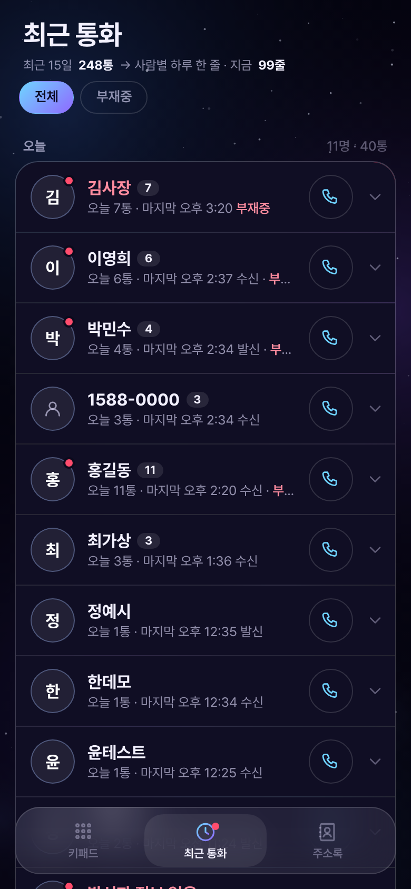
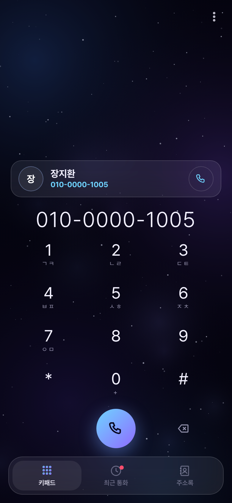
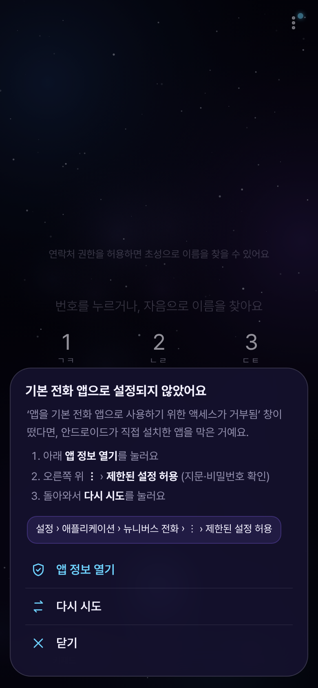
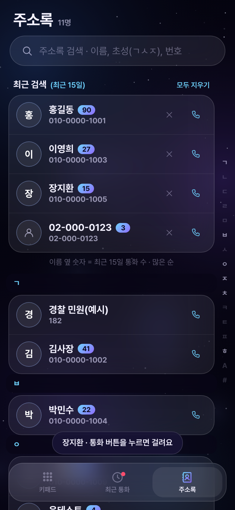
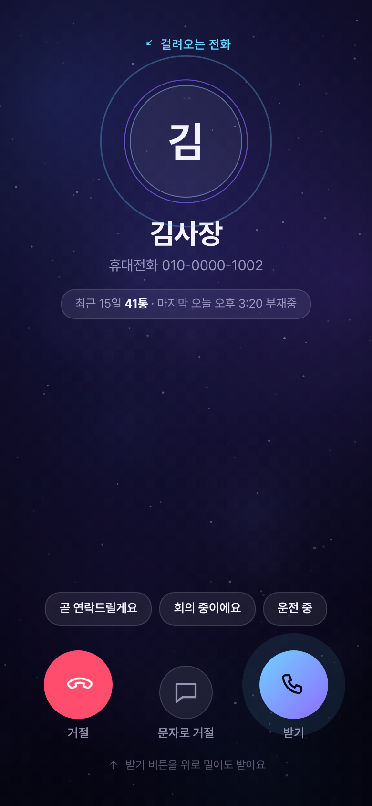
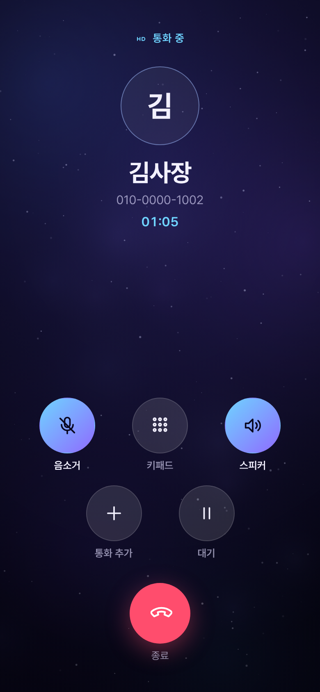
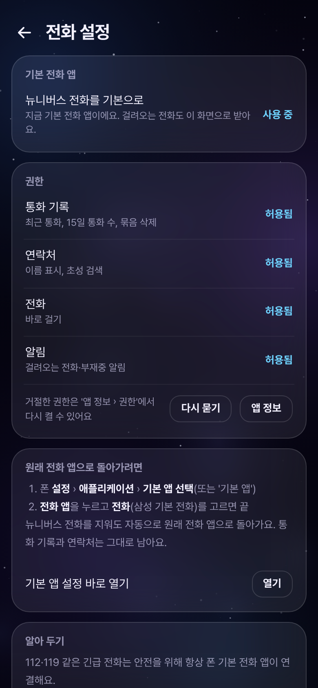

뉴니버스 전화 v4 (시험판)
버전 4-test · 뉴니버스 고정 서명(런처와 같은 서명) · 런처와 따로 까는 앱
내려받기 · 뉴니버스 전화 v4 (약 0.14MB)
v1·v2·v3를 깔았던 폰은 지우지 않고 그대로 깔면 업데이트돼요(통화 기록·설정 그대로).
v4 새로워진 점
- 주소록 오른쪽 위 빈 네모 흔적을 없앴어요. 초성(ㄱ ㄴ ㄷ…)을 밀 때만 잠깐 뜨는 큰 글자 풍선이 안 쓸 때도 빈 채로 남아 있던 문제였어요. 이제 초성 막대를 누르고 있을 때만 보이고 손을 떼면 사라져요.
- 화면 맨 위 글씨(주소록·최근 통화·전화 설정 제목, ← 단추)가 상태 표시줄(시계·배터리) 밑으로 겹치지 않게 상태 표시줄 높이만큼 띄웠어요.
- 주소록 맨 아래 연락처가 아래 탭 바에 가려지지 않는지 확인했어요. 안 쓸 때 화면 맨 아래에 살짝 비치던 메뉴 테두리도 없앴어요.
v3 새로워진 점
- 아래 탭 바에서 설정 탭을 뺐어요. 이제 키패드 · 최근 통화 · 주소록 세 칸이에요.
- 전화 설정은 키패드 오른쪽 위 ⋮ › 전화 설정 전체 보기로 들어가요. 왼쪽 위 ← 또는 폰의 뒤로 가기로 원래 화면에 돌아와요.
v2 새로워진 점
- 최근 통화 위의 큰 ‘기본 전화 앱으로 설정’ 카드를 없앴어요. 대신 키패드 화면 오른쪽 위 ⋮ (점 세 개)에 전화 설정을 모았어요: 기본 전화 앱으로 설정(이미 기본이면 ‘기본 전화 앱 사용 중’), 권한, 앱 정보·제한된 설정, 원래 전화 앱으로 돌아가기, 전체 설정. 할 일이 남아 있으면 ⋮ 옆에 작은 점이 떠요.
- ‘앱을 기본 전화 앱으로 사용하기 위한 액세스가 거부됨’ 창이 뜨면, 앱 안에 무엇을 하면 되는지와 앱 정보 열기 단추가 나와요(아래 3번).
- 아래 탭의 검색 → 주소록: 연락처가 가나다순으로 나오고, 오른쪽 ㄱ ㄴ ㄷ … A #을 누르거나 밀면 그 자리로 바로 넘어가요. 맨 위 검색칸에서 이름·초성·번호로 찾고, 최근 검색 (최근 15일)과 통화 수도 그대로예요. 연락처를 누르면 바로 전화가 걸리고, 길게 누르면 문자·저장 메뉴가 나와요.
- 통화 기록 권한이 없을 때 ‘통화가 없어요’ 대신 ‘통화 기록 권한이 필요해요’가 나와요.
시험판이에요. 먼저 사무실 폰에서 써 보고, 이상하면 바로 원래 전화 앱으로 돌릴 수 있어요(아래 4번). 112·119 같은 긴급 전화는 안전을 위해 항상 폰 기본 전화 앱이 연결해요.
1. 설치하기
- Play 프로텍트 검사 잠시 끄기: Play 스토어 앱 → 오른쪽 위 프로필 사진 → Play 프로텍트 → 오른쪽 위 톱니바퀴 → Play 프로텍트로 앱 검사를 끄기.
- 이 폰의 크롬(또는 삼성 인터넷)에서 위 내려받기를 눌러요. ‘해를 끼칠 수 있습니다’가 나오면 다운로드.
- 내 파일 › 다운로드에서 newniverse-phone-v4-test.apk를 눌러요. ‘출처를 알 수 없는 앱’ 안내가 나오면 설정 → 이 출처 허용을 켜고 돌아와 설치.
- 설치가 끝나면 Play 프로텍트 검사를 다시 켜 주세요 (1번과 같은 곳).
2. 처음 켜기 (권한 허용)
- 앱 목록에서 뉴니버스 전화를 눌러요.
- 권한 창이 차례로 떠요: 전화, 통화 기록, 연락처, 알림을 모두 허용해 주세요.
· 통화 기록: 최근 통화와 ‘15일 통화 수’ · 연락처: 이름·초성 검색 · 전화: 바로 걸기 · 알림: 걸려오는 전화·부재중
- 실수로 거절했으면 키패드 ⋮ › 권한 허용하기 (또는 앱 정보 › 권한).
3. 기본 전화 앱으로 지정하기
기본 전화 앱으로 지정해야 걸려오는 전화와 통화 중 화면이 뉴니버스 모양으로 나와요. 지정하지 않아도 걸기·최근 통화·주소록은 돼요(통화 화면은 원래 전화 앱 모양).
- 뉴니버스 전화 키패드 화면 오른쪽 위 ⋮ → 기본 전화 앱으로 설정을 눌러요. (또는 ⋮ › 전화 설정 전체 보기 → 기본 전화 앱)
- 뜨는 창에서 뉴니버스 전화를 고르고 기본으로 설정을 눌러요.
- 창이 안 뜨면: 폰 설정 › 애플리케이션 › 기본 앱 선택 › 전화 앱 → 뉴니버스 전화.
‘액세스가 거부됨’(제한된 설정) 창이 뜨면 — 직접 설치한 앱이라 안드로이드가 한 번 막은 거예요.
- 뉴니버스 전화에 뜬 안내에서 앱 정보 열기를 눌러요. (직접 가려면: 설정 › 애플리케이션 › 뉴니버스 전화)
- 오른쪽 위 ⋮ → 제한된 설정 허용 → 지문·비밀번호 확인.
- 뉴니버스 전화로 돌아와 다시 시도 (또는 ⋮ → 기본 전화 앱으로 설정).
통화 기록 권한 창이 안 뜰 때도 같은 방법으로 풀려요(그다음 앱 정보 › 권한 › 통화 기록 허용).
4. 원래 전화 앱으로 돌아가기
- 폰 설정 › 애플리케이션 › 기본 앱 선택 › 전화 앱.
- 전화(삼성 기본 전화)를 고르면 끝. 뉴니버스 전화 키패드 ⋮ › 원래 전화 앱으로 돌아가기로도 갈 수 있어요.
- 뉴니버스 전화를 지워도 자동으로 원래 전화 앱으로 돌아가요. 통화 기록과 연락처는 폰에 그대로 남아요.
5. 되는 것 · 아직 안 되는 것
- 키패드: 번호 누르기, 초성 검색(1=ㄱㅋ 2=ㄴㄹ 3=ㄷㅌ 4=ㅂㅍ 5=ㅅㅎ 6=ㅈㅊ 7=ㅇㅁ), 0 길게 = +, 지우기 길게 = 모두 지우기, 빈 칸에서 통화 버튼 = 마지막으로 건 번호 불러오기. 통화 버튼은 누른 번호 그대로 걸어요.
- 최근 통화: 사람별 하루 한 줄(예: 김사장 · 오늘 7통 · 마지막 오후 3:20 부재중), 부재중이면 빨간 점, 누르면 그날 통화가 시간순으로 펼쳐짐, 왼쪽으로 밀면 전화·삭제(3.5초 안에 되돌리기), 최근 30일까지.
- 주소록: 가나다순 + 초성 빨리 넘기기, 맨 위 검색칸(이름·초성·번호), 최근 검색 (최근 15일) + 이름 옆 15일 통화 수, 누르면 바로 전화.
- 걸려오는 전화: 받기·거절·문자로 거절(빠른 답장 3개), 받기 버튼 위로 밀기, 잠금 화면 위에도 뜸, 최근 15일 통화 수 표시.
- 통화 중: 음소거·스피커·키패드(번호 보내기)·통화 추가·대기·종료, 귀에 대면 화면 꺼짐, 통화 중 알림에서 ‘끊기’.
- 부재중 알림(기본 전화 앱일 때).
- 통화 녹음 없음 (안드로이드가 일반 앱의 통화 녹음을 막아요. 버튼도 뺐어요).
- 영상 통화, 통화 합치기(회의), 블루투스 이어폰으로 바꾸기 단추, 연락처 편집 화면, 차단 목록, 음성사서함은 아직 없어요(원래 앱 또는 연락처 앱 사용).
- 듀얼 심 폰에서 어느 심으로 걸지 고르는 창은 안드로이드 기본 창이 떠요.
- 문자(SMS)는 다음 단계예요. ‘문자’ 단추는 지금 쓰는 문자 앱을 열어요.
6. 확인해 주세요 (사무실 폰)
- 설치 → 권한 4개 허용 → 최근 통화에 실제 기록이 사람별 하루 한 줄로 나오나요?
- 키패드에서 자음 번호(예: 김사장 → 156)로 이름이 찾아지나요? 번호 일부로도요?
- 기본 전화 앱 지정 창이 뜨고, 지정되나요?
- 다른 폰으로 걸어서: 화면이 꺼져 있을 때 / 잠금일 때 / 다른 앱을 쓰는 중일 때 수신 화면이 뜨고 벨이 울리나요? 받기·거절·문자로 거절이 되나요?
- 통화 중: 음소거·스피커가 실제로 바뀌나요? 키패드 번호(ARS)가 상대에게 가나요? 귀에 대면 화면이 꺼지나요?
- 안 받은 전화 뒤 부재중 알림이 뜨나요? 최근 통화에 빨간 점이 나오나요?
- 왼쪽으로 밀어 삭제 → 3.5초 뒤 실제로 지워지나요? 되돌리기도 되나요?
- 원래 전화 앱으로 되돌리기(4번)가 잘 되나요?
이상한 점은 ‘어떤 화면에서, 무엇을 눌렀더니, 어떻게 됐다’로 알려 주시면 바로 고칠게요.
7. 런처와 함께 쓰기
뉴니버스 런처 v33b 이상을 깔면 독의 전화 아이콘이 뉴니버스 전화를 열어요. 뉴니버스 전화를 지우면 원래 전화 앱으로 돌아가요.
← 뉴니버스 런처 설치 페이지
화면









화면은 가짜 예시 데이터(010-0000-xxxx)로 찍은 것이에요.